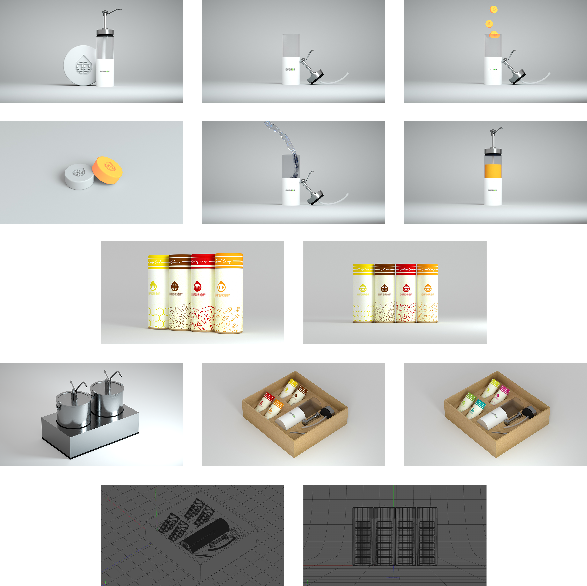

Compleat
In dem Praktikum gegen Ende meines Studiums konnten die bislang erworbenen Kompetenzen angewendet, praktische Erfahrungen gesammelt und wertvolle Einblicke in die Berufswelt erlangt werden. Das Praktikum bei Compleat wurde drei Monate in Vollzeit absolviert.
Compleat ist ein Unternehmen, welches gesunde Mahlzeiten in sogenannten „Bowls“ also Schalen anbietet. Compleat steht für beste Zutaten und Nährwerte, Nachhaltigkeit, Individualität und Transparenz.
„Wir haben es uns zur Aufgabe gemacht, Fast Food zu revolutionieren. Jeder sollte sich einfach, gesund und lecker ernähren können."
- Felix Eitler & Christian Michaeli
Meine Aufgaben im Praktikum drehten sich rund um das Thema Gestaltung. Ich durfte viele Druckerzeugnisse konzipieren und entwerfen. Ebenfalls das eigenständige Ausdrucken von Plakaten und Postern hatte ich übernommen. Dazu konnte ich bei der digitalen und der Audio-Visuellen Gestaltung mitwirken. Es gab immer etwas an allen Ecken und Enden zu tun. Bei einem Startup mitzuwirken und überall Dinge in die Tat umsetzen zu können, schafft einfach ein gutes Gefühl. Alle Aufgaben konnte ich problemlos mit der Adobe Creative Cloud und den Programmen Photoshop, InDesign, Illustrator, Premiere Pro und Cinema4D bewältigen.
Zu den von mir erstellten Printerzeugnissen zählen: Kundenkarten, Schilder für den Food-Truck, Flyer für verschiedene Anlässe, Sticker, Aufsteller, Plakate und Poster, Briefpapier Vorlagen und viele kleinere Aufgaben.
Digitale Aufgaben waren: LinkedIn Header für die Mitarbeiter und Unternehmen, E-Mail-Banner erstellen, E-Mail-Signaturen mit Icons, Werbebilder und Banner für bestimmte Werbeaktionen mit Urbanworxx, Instagram Stories und Posts, Facebook Feed-Inhalte, neue Icons, eine Karte für die Compleat Fahrradtour und ein 3D-Modell eines See-Containers.
Auch Audio-Visuelle Inhalte für TikTok und Instagram konnte ich übernehmen. Das generelle Branding sollte ebenfalls überarbeitet werden. Dazu gehören zum Hauptteil Logo, Schriften, Farben, aber auch die Werte, Visionen und Ziele des Unternehmens. Weitere Beispiele meiner Arbeiten finden sich im Anhang.
Printerzeugnisse

Digitales
3D Modelle
Zu meinen digitalen Werken zählen ebenfalls eigens erstellte 3D Modelle.
In dem Praktikum bei Compleat konnte ich somit mein Können mit dem 3D-Programm "Cinema4D" unter beweis stellen.
Alle folgende 3D Werke sind von Grund auf selbst und ohne Hilfe externer presets oder heruntergeladener Objekte erstellt worden.
Die Render wurden mit den externen Renderern, Arnold und Octane, erstellt.
Container
 Diese Collage zeigt einige der finalen Render eines See-Containers, welcher zu einem stationären Food-Truck ohne Räder umfunktioniert wurde. Das Modell ist Zentimetergenau mithilfe der exakten Maße des Herstellers sowie den Geräten erstellt worden. Innen- sowie Außenausstattung wurde ebenfalls bei Tag und Nacht mit Innenbeleuchtung erstellt. Damit die Umsetzung möglichst problemlos von statten geht, war die genaue Anordnung der Geräte essentiell.
Diese Collage zeigt einige der finalen Render eines See-Containers, welcher zu einem stationären Food-Truck ohne Räder umfunktioniert wurde. Das Modell ist Zentimetergenau mithilfe der exakten Maße des Herstellers sowie den Geräten erstellt worden. Innen- sowie Außenausstattung wurde ebenfalls bei Tag und Nacht mit Innenbeleuchtung erstellt. Damit die Umsetzung möglichst problemlos von statten geht, war die genaue Anordnung der Geräte essentiell.
Eigene Saucen
Hier sind einige der finalen Render eines Projektes, eigene Soßen herzustellen, zu sehen. Diese sollen in Form von Drops erhältlich sein und in Verbindung mit Wasser eine Soße erzeugen. Der Name wurde unkenntlich gemacht.
Neues Geschäft
 Auch nach meinem Praktikum wurden meine Kenntnisse für 3D Modellierung erneut benötigt. Mit genauen Bauplänen und im ständigen Austausch mit Compleat, konnte ich ein Maßstab-getreues Geschäft gestalten. Auf den Bildern ist gut der gestalterische Prozess zu sehen.
Auch nach meinem Praktikum wurden meine Kenntnisse für 3D Modellierung erneut benötigt. Mit genauen Bauplänen und im ständigen Austausch mit Compleat, konnte ich ein Maßstab-getreues Geschäft gestalten. Auf den Bildern ist gut der gestalterische Prozess zu sehen.
Digitales